컴퓨터응용가공산업기사 (2005-03-20 기출문제)
1과목: 기계가공법 및 안전관리
1. 회전하는 상자에 공작물과 숫돌입자, 공작액, 콤파운드 등을 함께 넣어 공작물이 입자와 충돌하는 동안에 그 표면의 요철(凹凸)을 제거하며, 매끈한 가공면을 얻는 방법은?
- 버니싱(burnishing)
- 롤러 다듬질(roller finishing)
- 숏피닝(shot-peening)
- 배럴 다듬질(barrel finishing)
(정답률: 69%)

2. 길이 측정기 중 레버(lever)를 이용하는 것은?
- 마이크로미터(micrometer)
- 다이얼 게이지(dial gauge)
- 미니미터(minimeter)
- 옵티컬 플랫(optical flat)
(정답률: 53%)
3. 단조에 관한 설명으로 틀린 것은?
- 재료를 필요한 모양으로 변화시키는 것이다.
- 금속의 조직입자를 미세화한다.
- 단조중 조직의 변형과 재결정이 반복된다.
- 변태점에서의 단조는 질을 향상시킨다.
(정답률: 48%)
4. 밀링머신에서 스파이럴 밀링장치로 커팅할 때, 가공물의 원통직경을 120㎜, 스파이럴 각도를 30°로 할 경우의 리드(lead) 값은?
- 약 548㎜
- 약 653㎜
- 약 623㎜
- 약 638㎜
(정답률: 30%)
5. 인발 작업에서 지름 10mm의 강선을 지름 5mm로 만들었을때 단면 감소율은?
- 75%
- 50%
- 40%
- 25%
(정답률: 22%)
6. 가공하는 전극과 공작물 사이에 지립(砥粒)의 역할을 겸하는 절연체를 개재시켜 전해작용으로 생긴 양극의 산화피막을 절연체의 기계적 작용으로 제거하는 가공법은?
- 전기분해
- 전기화학 가공
- 전해연삭
- 방전가공
(정답률: 70%)
7. 항온열처리와 관계가 없는 것은?
- 재결정온도
- 변태
- 시간
- 온도
(정답률: 62%)
8. 각도를 측정할 수 없는 측정기는?
- 컴비네이션 세트
- 사인 바
- 실린더 게이지
- 수준기
(정답률: 69%)
9. 연삭숫돌 WA 60 K m V 에 대한 각각의 표시에 대한 설명으로 올바른 것은?
- m : 조직
- K : 결합제
- WA : 입도
- V : 결합도
(정답률: 51%)
10. 큐폴러(용선로)의 용량 표시로 옳은 것은?
- 매시간당 용해량(ton으로 표시)
- 1회에 용출되는 최대량
- 매시간당 송풍량
- 1회에 지금을 장입할 수 있는 최대량
(정답률: 30%)
11. 프레스가공 방식에서 상하형이 서로 무관계한 요철(凹凸)을 가지고 있으며 재료를 압축함으로써 상하면상에는 다른 모양의 각인(刻印)이 되는 가공법은?
- 코이닝 가공(coining work)
- 굽힘가공(bending work)
- 엠보싱가공(embossing work)
- 드로잉가공(drawing work)
(정답률: 49%)
12. 속이 빈(주철관등)주물을 주조하는 가장 적합한 주조법은?
- 쉘 주형법(shell moulding process)
- 쇼 주조법 (show process)
- 인베스트먼트 주조법 (investment process)
- 원심 주조법 (centrifugal casting)
(정답률: 30%)
13. 용접의 단점으로 틀린 것은?
- 잔류응력(殘留應力)이 생기기 쉽다.
- 자재가 많이 소모된다.
- 품질검사가 곤란하다.
- 용접 모재의 재질에 대한 영향이 크다.
(정답률: 66%)
14. 선반에서 척의 크기를 표시한 것 중 옳은 것은?
- 공작물의 최대지름
- 척의 바깥지름
- 조의 수량
- 척의 두께
(정답률: 35%)
15. 압연 롤러의 구성 요소 중 틀린 것은?
- 네크(neck)
- 워블러(wobbler)
- 몸체(body)
- 캘리버(caliber)
(정답률: 41%)
16. 다음 중 일반적으로 대형 강제파이프의 제작방법으로 가장 많이 사용되는 것은?
- 용접
- 인발
- 압출
- 단조
(정답률: 40%)
17. 검출기를 기계의 테이블에 직접 부착하여 피드백(Feedback)을 행하게 하여 정밀도를 높일 수 있는 NC 서보의 종류는 무엇인가?
- 개방회로 방식(Open loop system)
- 반폐쇄회로 방식(Semi-closed loop system)
- 폐회로 방식(Closed loop system)
- 하이브리드 서보 방식(Hybrid servo system)
(정답률: 35%)
18. 기어나 나사를 제작 가공할 수 있는 것은?
- 인발
- 용접
- 전조
- 압연
(정답률: 47%)
19. 공작물의 담금질 경화시키고자 하는 면에 대응하도록 적당한 코일을 만들어 고주파 전류를 통하여 표면경화시키는 것은?
- 고체 침탄법
- 고주파 경화법
- 청화법
- 질화법
(정답률: 86%)
20. 지그(jig)의 주요 구성요소가 아닌 것은?
- 위치 결정구(locator)
- 부싱(bushing)
- 클램프(clamp)
- 가이드 플레이트(guide plate)
(정답률: 33%)
2과목: 기계설계 및 기계재료
21. 다음 중 비중이 가장 큰 금속은?
- Zn
- Cr
- Au
- Mo
(정답률: 33%)
22. 다음 중 주강(cast steel)이 주철(cast iron)보다 부족한 성질인 것은?
- 충격치
- 인장강도
- 유동성
- 굽힘강도
(정답률: 36%)
23. 다음 중 고강도용 알루미늄 합금인 두랄루민의 조성은?
- Al-Cu-Mg-Mn
- Al-Cu-Mn-Mo
- Al-Cu-Ni-Mg
- Al-Cu-Ni-Si
(정답률: 68%)
24. 다음 중 열팽창계수가 적어 바이메탈 재료로 가장 적합한 것은?
- 듀랄루민(duralumin)
- 백금-로듐(Pt-Rh)
- 퍼말로이(permalloy)
- 인바(invar)
(정답률: 42%)
25. 다음 중 담금질 불량의 원인으로 틀린 것은?
- 재료 선택의 부정확
- 담금질성
- 냉각속도
- 탄성
(정답률: 55%)
26. 공구재료가 갖추지 않아도 되는 성질은?
- 적당한 인성
- 열처리성
- 취성
- 내마멸성
(정답률: 62%)
27. 철사를 끊으려고 손으로 여러 번 구부렸다 폈다 하면 구부러지는 부분에 경도가 증가된다. 가장 큰 이유는?
- 쌍정현상 때문에
- 가공경화현상 때문에
- 질량효과 때문에
- 결정입자가 충격을 받기 때문에
(정답률: 53%)
28. 다음 항공기용 신소재 중 비강도(比强度)가 가장 큰 것은?
- 유기재료(흑연-에폭시) 복합재
- 티타늄 복합재
- 알루미늄 복합재
- 카본 복합재
(정답률: 18%)
29. 액체 침탄법의 이점에 대한 설명으로 틀린 것은?
- 온도조절이 용이하고 일정시간을 지속할 수 있다.
- 침탄층의 깊이가 깊다.
- 산화방지 및 시간절약의 효과가 있다.
- 균일한 가열이 가능하고 제품변형을 억제한다.
(정답률: 45%)
30. 탄소강의 성질을 설명한 것으로 틀린 것은?
- 탄소량의 증가에 따라 비중·열팽창계수·열전도도는 감소한다.
- 탄소량의 증가에 따라 비중·열팽창계수·열전도도는 증가한다.
- 탄소량의 증가에 따라 비열·전기저항·항자력은 증가한다.
- 탄소량의 증가에 따라 내식성은 감소한다.
(정답률: 36%)
31. 베어링의 내경 번호가 00 이면 내경치수는 몇 ㎜인가?
- 5㎜
- 10㎜
- 15㎜
- 20㎜
(정답률: 71%)
32. 그림과 같은 스프링장치에서 각각의 스프링의 상수가 K1= 4㎏f/㎝, K2 = 5㎏f/㎝, K3 = 6㎏f/㎝ 일 때, 하중방향으로의 처짐량이 δ=150㎜ 일 경우 하중 P는 얼마인가?
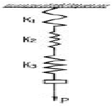
- P = 251㎏f
- P = 225㎏f
- P = 31.4㎏f
- P = 24.3㎏f
(정답률: 33%)
33. 외력의 작용 없이 스스로 풀어지지 않는 나사의 자립조건은? (단, α는 리드각, ρ는 마찰각이다.)
- ρ≥ α
- ρ= 2α
- α＜ 2ρ
- ρ＞ 2α
(정답률: 30%)
34. 평벨트에 비해 V 벨트 전동의 특징이 아닌 것은?
- 미끄럼이 적고, 전동 효율이 좋다.
- 축 사이의 거리가 평벨트보다 짧다.
- 축간거리를 마음대로 할 수 있다.
- 운전이 정숙하고 충격을 완화한다.
(정답률: 58%)
35. 회전 운동을 직선 운동으로 바꿀 때 쓰이는 기어는 다음의 어느 것인가?
- 헬리컬 기어
- 베벨 기어
- 랙과 피니언
- 웜과 웜기어
(정답률: 56%)
36. 지름 50㎜의 연강축을 사용하여 350rpm으로 40㎾을 전달할 묻힘키의 길이는 몇 ㎜ 정도가 적당한가? (단, 키 재료의 허용전단응력은 5㎏f/mm2, 키의 폭과 높이 b x h = 15mm x 10mm 이며 전단저항만 고려한다.)
- 38㎜
- 46㎜
- 60㎜
- 78㎜
(정답률: 32%)
37. 지름 20㎜, 피치 2㎜인 3줄 나사를 1/2 회전하였을 때 이 나사의 진행거리는?
- 1㎜
- 3㎜
- 4㎜
- 6㎜
(정답률: 66%)
38. 기어에서 전위량을 모듈로 나눈 값을 무엇이라 하는가?
- 물림률
- 전위계수
- 언더컷
- 미끄럼률
(정답률: 67%)
39. 하중이 축에 직각으로 작용하는 곳에 쓰이는 베어링은?
- 레이디얼 베어링
- 컬러 베어링
- 스러스트 베어링
- 피벗 베어링
(정답률: 45%)
40. 다음 중 전단력이 작용하는 곳에 가장 적합한 볼트는?
- 스터드 볼트
- 탭 볼트
- 리머 볼트
- 스테이 볼트
(정답률: 29%)
3과목: 컴퓨터응용가공
41. 보기는 다음 중 어떤 변환이 이루어 지는가?
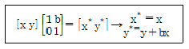
- X축 전단
- Y축 전단
- X축 회전
- Y축 회전
(정답률: 40%)
42. 호칭번호가 6026P6인 단열 깊은홈 볼 베어링의 안지름 치수는 몇 ㎜인가?
- 6
- 26
- 30
- 130
(정답률: 52%)
43. 다음 기하공차의 부가기호 중 돌출 공차역을 나타내는 것은?
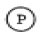
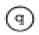
(정답률: 45%)
44. 다음 중 커서 제어장치가 아닌 것은?
- Thumb wheel
- Joystick
- Tracker ball
- Pen plotter
(정답률: 54%)
45. 다음 중 CAD 용 입력장치가 아닌 것은?
- 마우스(mouse)
- 트랙볼(track ball)
- 플라즈마판(plasma panel)
- 라이트펜(light pen)
(정답률: 76%)
46. 다음 그림과 같은 투상도의 명칭은?
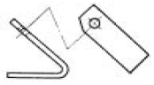
- 부분 투상도
- 보조 투상도
- 국부 투상도
- 회전 투상도
(정답률: 52%)
47. 가는 실선의 용도로 적합하지 않는 것은?
- 공구, 지그 등의 위치를 참고로 나타내는데 사용한다.
- 치수를 기입하기 위하여 쓰인다.
- 기술,기호 등을 표시하기 위하여 끌어 내는데 쓰인다
- 수면, 유면 등의 위치를 표시하는데 쓰인다.
(정답률: 47%)
48. 3차원 변환에서 Y축을 중심으로 α의 각도 만큼 회전한 경우의 변환식은? (단, 반시계 방향으로 측정한 각을 + 로 한다.) (보기 오류로 현재 복원중입니다. 보기 내용을 아시는 분들께서는 오류 신고를 통하여 보기 작성 부탁 드립니다. 정답은 1번입니다.)
- 복원중
- 복원중
- 복원중
- 복원중
(정답률: 3%)
49. 평벨트 풀리의 도시법 설명으로 틀린 것은?
- 대칭형인 것은 그 일부만을 도시할 수 있다.
- 암은 길이방향으로 절단하여 도시한다.
- 모양에 따라 축직각 방향의 투상도를 주투상도로 할 수 있다.
- 암의 단면형은 회전단면으로 도시할 수 있다.
(정답률: 47%)
50. 다음 치수기입의 원칙을 설명한 것 중 틀린 것은?
- 특별히 명시하지 않는 한 도시한 대상물의 마무리 치수를 기입한다.
- 서로 관련되는 치수는 되도록이면 분산하여 기입한다.
- 기능상 필요한 경우 치수의 허용한계를 기입한다.
- 참고치수에 대해서는 수치에 괄호를 붙여 기입한다.
(정답률: 66%)
51. 다음 CAD 명령어 중에서 2차원 형상에서는 선대칭을 3차원 형상에서는 면 대칭을 나타내는 것은?
- Scaling
- Rotation
- Mirror
- Translation
(정답률: 68%)
52. 보기와 같은 제3각 정투상도에서의 평면도로 가장 적합한 것은?
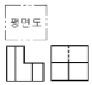
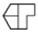
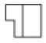
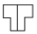
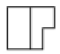
(정답률: 55%)
53. 스프링의 제도방법 설명 중 틀린 것은?
- 코일스프링은 하중이 가해지지 않은 상태에서 그리는 것을 원칙으로 한다.
- 겹판스프링의 모양만을 도시할 때에는 스프링의 외형을 가는 1점쇄선으로 그린다.
- 도면에서 지시가 없는 코일스프링은 모두 오른쪽으로 감은 것을 나타낸다.
- 코일 스프링의 간략도는 스프링 재료의 중심을 굵은 실선으로 그린다.
(정답률: 50%)
54. 다음 렌더링기법 중 광선투과법(ray tracing)에 관한 내용으로 틀린 설명은?
- 광선이 광원으로부터 나와 물체에 반사되어 뷰잉평면에 투사될 때까지의 궤적을 거꾸로 추적한다.
- 뷰잉화면상의 화소(pixel)의 개수에 제한을 받지않고 빛의 강도와 색깔을 결정할 수 있다.
- 뷰잉화면상에서 거꾸로 추적한 광선이 광원까지 도달하였다면 광원과 화소사이에는 반사체가 존재한다고 해석한다.
- 뷰잉화면상에서 거꾸로 추적한 광선이 광원까지 도달하지 않는다면 그 반사면에서의 색깔을 화소에 부여한다.
(정답률: 47%)
55. 보기와 같은 끼워마춤 허용치수에서 최소틈새는 얼마인가?
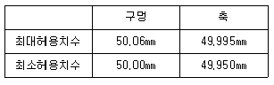
- 0.075
- 0.025
- 0.⑤
- 0.0⑤
(정답률: 58%)
56. 다음 중 변환 행렬과 관계 없는 명령어는?
- Break
- Move
- Rotate
- Mirror
(정답률: 60%)
57. 그림과 같은 형상을 표현하는 곡면 모델링 기법은?
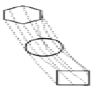
- Ruled Surface
- Sweep Surface
- NURBS Surface
- Coons Surface
(정답률: 52%)
58. 컴퓨터의 운영체제(O.S) 기능 중 분산처리 시스템에 대한 특징을 설명한 것으로 잘못된 것은?
- 자료 처리 속도가 빠르다.
- 시스템의 신뢰성이 낮다.
- 새로운 기능을 부여하기가 용이하다.
- 부하의 자동 분산이 용이하다.
(정답률: 69%)
59. 도면을 그릴 때에 제일 먼저 결정해야 할 선의 굵기는?
- 외형선
- 중심선
- 치수선
- 숨은선
(정답률: 84%)
60. 다음 그림과 같이 P1(2,1), P2(5,2) 점을 지나는 직선의 방정식은?
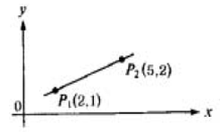
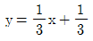
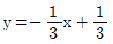
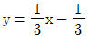
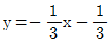
(정답률: 34%)
4과목: 기계제도 및 CNC공작법
61. 머시닝센터에서 그림과 같이 A에서 B로 공구를 이동시키려한다. 증분방식(Incremental Programming)으로 올바르게 프로그램된 것은?
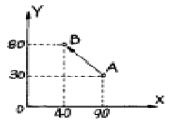
- G50 G01 X40.0 Y80.0;
- G90 G01 X40.0 Y80.0;
- G91 G01 X-50.0 Y50.0;
- G50 G01 X-50.0 Y50.0;
(정답률: 61%)
62. 솔리드 모델링 방법에서 하나의 입체를 둘러싸고 있는 면을 조합하여 표현한 방식은 어느 것인가?
- CSG 방식
- CYLINDER 방식
- FEM 방식
- B-REP 방식
(정답률: 36%)
63. CNC 공작기계의 작동에서 기계의 제어부분과 computer가 직접 RS232C 인터페이스로 연결되어 기계를 제어하는 방법은?
- FMS
- CIM
- DNC
- CAPP
(정답률: 49%)
64. 모델링 기법 중에서 실루엣(silhouette)을 구할 수 없는 모델링 기법은?
- B-rep 방식 (Boundary Representation)
- CSG 방식 (Constructive Solid Geometry)
- 서피스 모델방식 (Surface Modeling)
- 와이어 프레임 모델방식 (Wire Frame Modeling)
(정답률: 65%)
65. 일반적으로 와이어컷 방전가공에서 가공액으로 가장 많이 사용하는 것은?
- 경유
- 등유
- 염수
- 물
(정답률: 50%)
66. 지름 50mm, 가공길이가 800mm인 환봉을 절삭속도 50m/min 이송은 0.2 mm/rev 으로 선반에서 1회 절삭가공하는데 소요되는 시간은?
- 약 6.6분
- 약 8.6분
- 약 10.6분
- 약 12.6분
(정답률: 18%)
67. 다음 중 Bezier 곡면의 특징이 아닌 것은?
- 곡면을 부분적으로 수정할 수 있다.
- 곡면의 코너와 코너 조정점이 일치한다.
- 곡면이 조정점들의 볼록포(convex hull) 내부에 포함된다.
- 곡면이 일반적인 조정점의 형상에 따른다
(정답률: 46%)
68. 곡면 모델링에 관련된 기하학적 요소(Geometric entity)와 관련이 없는 것은?
- 점(point)
- 입체(isometric)
- 곡선(curve)
- 곡면(surface)
(정답률: 56%)
69. CNC 장비의 보수 및 유지를 위한 설명 중 틀린 것은?
- 습동유가 떨어지지 않도록 보충한다.
- 조정 및 보수는 규정된 공구를 사용한다.
- 부품 교환은 규정부품을 사용한다.
- 강전반의 청소는 압축공기나 걸레로 털어서 깨끗하게 청소한다.
(정답률: 64%)
70. SM20C의 공작물을 ø20mm 드릴을 사용하여 구멍가공을 할 때 주축 회전수는 몇 rpm 인가? (단, 절삭속도는 30 m/min이다.)
- 378
- 458
- 496
- 478
(정답률: 50%)
71. 다음 준비기능 중 지령된 블록에서만 기능이 유효한 것은?
- G00
- G01
- G03
- G04
(정답률: 68%)
72. 다음은 ①에서 ②로 가공한 CNC선반 프로그램이다. [ ]에 적당한 블럭은?
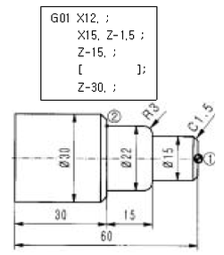
- X22. R-3.
- X22. R3.
- X22. K-3.
- X22. K3.
(정답률: 32%)
73. 위치 검출을 서보모터 축에서 하기도 하고 볼 스크루의 회전 각도로 검출하기도 하는 방법을 채택한 서보기구는 무엇인가?
- 반폐쇄회로
- 폐쇄회로
- 하이브리드 서보방식
- 개방회로
(정답률: 54%)
74. 머시닝센터 가공 프로그램에 사용되는 준비기능 가운데 카운터 보링 기능에 해당하는 G 코드는?
- G81
- G82
- G83
- G84
(정답률: 31%)
75. 다음 중 DNC(Direct Numerical Control) 시스템의 구성 성분이 아닌 것은?
- 컴퓨터(Computer)
- 테이프 리더(Tape reader)
- 통신선(Telecommunication lines)
- CNC 공작기계
(정답률: 67%)
76. 컴퓨터 내부 모델링 방법 중 3차원적인 물체의 표현 방법이 아닌 것은?
- 회전 분할에 의한 표현 방법
- 공간 격자에 의한 표현 방법
- 메시(mesh) 분할에 의한 표현 방법
- 시브(sheave)에 의한 표현 방법
(정답률: 14%)
77. 다음 그림은 어떠한 모델(model)에 해당되는가?
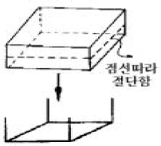
- 입력 모델 (input model)
- 솔리드 모델 (solid model)
- 와이어 프레임 모델 (wire frame model)
- 서피스 모델 (surface model)
(정답률: 49%)
78. NC공작기계의 특징이 아닌것은?
- 제품의 균일화가 가능하다.
- 작업시간 단축으로 생산성이 향상된다.
- 특수공구의 제작으로 공구관리비가 많이 소요된다.
- 범용 공작기계에 비하여 가격이 비싸다.
(정답률: 76%)
79. 다음 프로그램에서 직경이 10mm 일때 주축의 회전수는 약 몇 rpm 인가?
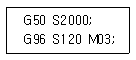
- 3820
- 2000
- 955
- 120
(정답률: 44%)
80. B-스플라인곡선에 대한 다음 설명 중 옳지 않은 것은?
- 차수가 2인 경우 1차 미분연속을 갖는다.
- 특수한 경우에 한하여 Bezier곡선으로 표시될수 있다
- 균일 절점벡터는 주기적인 B-스플라인을 구현한다.
- 전역조정 특성(global control)을 갖는다.
(정답률: 18%)